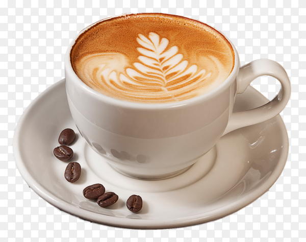
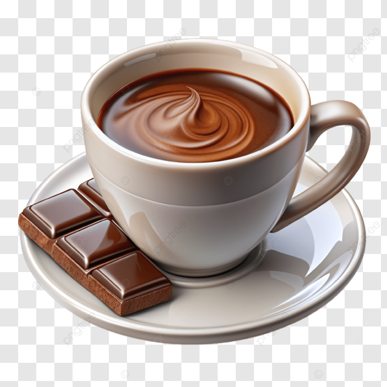
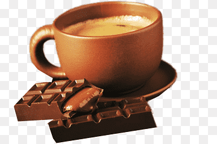

Brewing Connections, One Cup at a Time.
A warm neighborhood space where people meet, work, and relax. We serve locally sourced, hand-crafted coffee, artisan teas, and fresh pastries in a cozy, friendly environment
A warm neighborhood space where people meet, work, and relax. We serve locally sourced, hand-crafted coffee, artisan teas, and fresh pastries in a cozy, friendly environment



Our Story
Started in 2024, La KAPE pa began with a simple idea: to make a cozy space where neighbors can relax with a truly
great cup of coffee. We source our beans from local farms that use fair and earth-friendly practices. Every cup is
roasted and poured with care by our friendly team.
09123456789